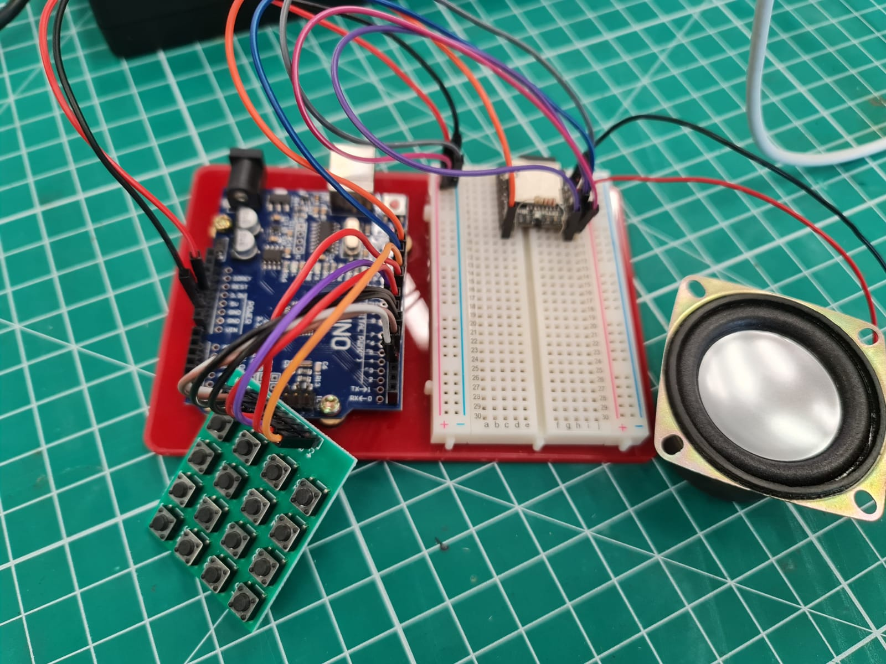

For this project, I was first handed a 4 x 4 keypad that I could experiment with before implementing the code into my project. This was my first time coding a keypad or even using a switch statement. I was previously taught how to use a switch statement but have never used it so it was a first for me when I used it for this project. I used the LED I used in previous coding projects found here and made it so that when I pressed a button, a combination of the LEDs will light up. This allowed me to know that it was working. Initially, I tried implementing it so that when I pressed a pushbutton, it will change to a new set of light combinations which worked initially but could not be controlled like in Assignment 12 found here and so I decided to remove the button from the project. This is the result of my testing and its code.
After making sure the coding could work, I changed the coding to work with the DFplayer mini. I then changed the audio files in the SD card to some piano keys so that I could play Megalovania. Although the audio sounded soft when the speaker was not in the box, it was audible when in the box. Though it has to be noted that even though the note sounded correct when played on the computer, it did not sound like the note its supposed to be when played through the speaker. The circuit and code is shown below.
